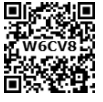

Higher Secondary Second Year PHYSICS
LIST OF EXPERIMENTS
1. Determination of the specific resistance of the material of the given coil using metre bridge.
2. Determination of the value of the horizontal component of the Earth’s magnetic field using tangent galvanometer.
3. Comparison of emf of two cells using potentiometer.
4. Determination of the refractive index of the material of the prism by finding angle of prism and angle of minimum deviation using spectrometer.
5. Determination of the wavelength of a composite light by normal incidence method using diffraction grating and spectrometer (The number of lines per metre length of the grating is given).
6. Investigation of the voltage-current (V-I) characteristics of P N junction diode.
7. Investigation of the voltage-current (V-I) characteristics of Zener diode.
8. Investigation of the static characteristics of a N P N Junction transistor in common emitter configuration.
9. Verification of the truth table of the basic logic gates using integrated circuits
10. Verification of De Morgan’s theorems using integrated circuits
